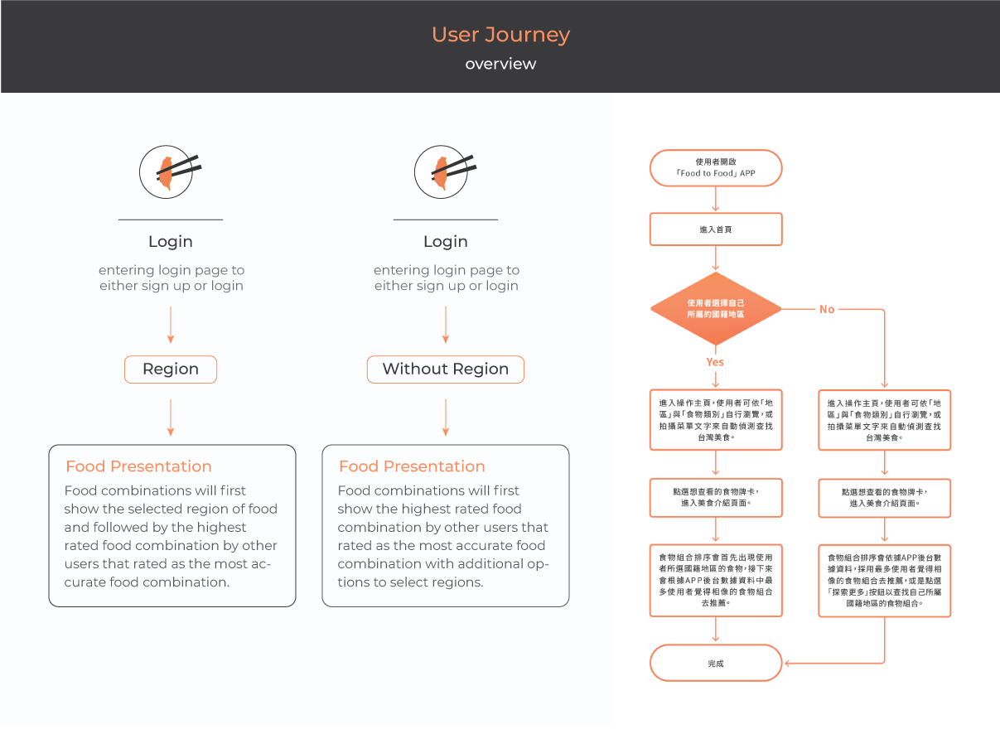
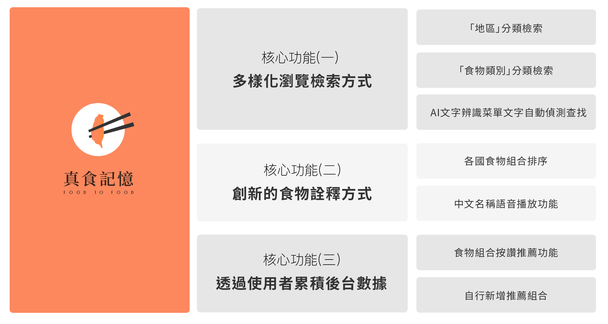
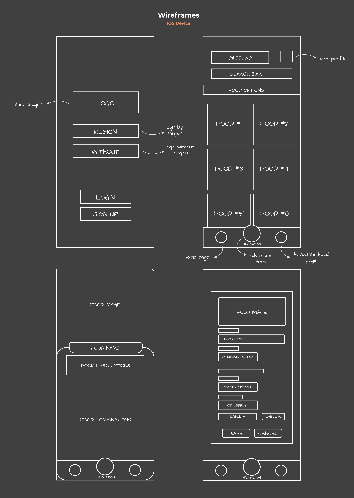
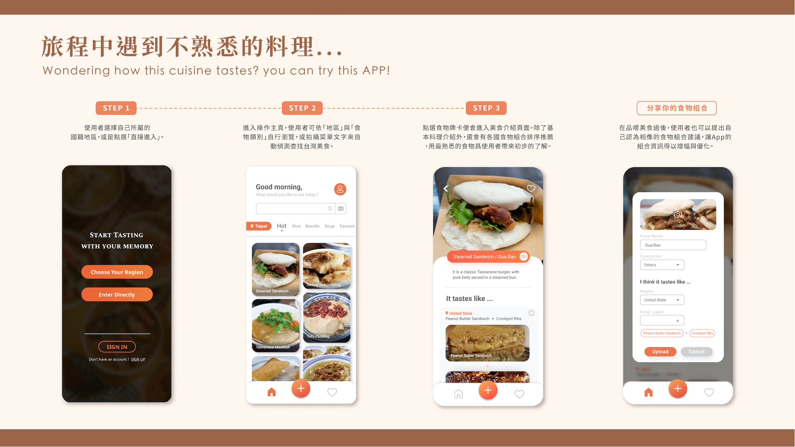

Food to Food
2021-User Experience design
Role
UX Design
Prototyping
Tool/Method
Figma
Timeline
2021 April
Overview
台灣美食揚名國際，許多外國觀光客都想來台灣探索美食，然而因菜餚命名方式獨特，加上外國人對於台灣美食還是有一定程度的陌生，因而導致他們無法想像食物的味道，進而產生恐懼與影響嘗試意願。因此我們想運用人們對於吃過的食物所產生的記憶認知，透過不同國家的食物來描繪台灣美食。幫助觀光客們用最熟悉的方式去了解台灣食物，以獲得更全面的台灣美食文化體驗。
Understanding the Problem
觀光產業興盛後,台灣美食成為吸引外國觀光客的一大亮點,因此不可避免的要將美食翻譯成外文。而翻譯的方式也大有不同,直接翻譯、意義解釋、外觀形容,或是直接以中文發音翻譯,但不管哪一種方式,都很難讓外國人理解這是一道什麼樣的菜,品嚐起來會是什麼味道。以熱炒三杯雞來舉例,英文翻譯成Three-cup chicken,三杯的意義在字面上對外國人來說無從理解,也無跡可尋。若以意義解釋給外國人,以英文闡述三杯是在烹飪時,加入醬油、麻油和米酒各一杯入菜而得名,雖然知道了三杯的意思,卻也想像不到會品嘗到的味道。因此該以何種命名方式或是其他方法,讓外國人想像未嘗試過的台灣美食,這就成為一個值得探討的問題。
Design Concept
以味知味的設計概念
本設計從認知層面出發,透過各國人本身熟悉的食物組合，來詮釋台灣美食。藉由向使用者說明這一道美食吃起來像是他們國家的什麼食物加上什麼食物,以加速他們對新食物的理解以及提升嘗試的意願。以下舉台灣有名的小吃—刈包為例,英文翻譯成Steam sandwich,音譯為Gua Bao,這兩種方式都是文學上的翻譯,很難直接理解這是一個什麼風味的食物。而以新的想法來詮釋的話,就會告訴美國的觀光客,這吃起來就像你們國家的花生三明治加上碳烤豬肋排,告訴日本人,這吃起來就像是大阪燒加上叉燒肉,以此類推。用各個國家的風味食物來詮釋台灣的美食,讓觀光客能有對味道的預期,因而放心的享受台灣的美食。
User Flow
當使用者在國外旅遊看到不了解的食物時，即可使用此APP，藉由AI辨識功能，辨識菜單上的菜名或是菜餚，來檢索該道料理的相關資訊。
Core functions
藉由新想法的詮釋,設計出一款行動裝置程式App「 真食記憶 」英文名稱為「Food to Food」,意在以食物來描繪食物,希望藉由現今人們隨身攜帶的手機,就能查詢不熟悉的台灣美食,提前了解其風味,依據個人喜好去嘗試新的菜餚。整體APP包含3大核心功能。
1. 多樣化瀏覽檢索方式
搜尋方式可以從搜尋功能頁面滑動資訊、根據類別查看、搜尋名稱以及拍攝菜單文字或菜餚來進行AI自動偵測,多樣的搜尋方式可以讓語言的不便利性得以解決。
2. 創新的食物詮釋方式
系統會優先呈現觀光客於登入頁面時所選擇的國家食物組合，接著再根據味道符合程度，不分國家類型，依序呈現系統中最高分的食物類型。
3. 透過使用者累積後台實驗數計
在品嚐美食過後,使用者也可以提出自己認為相像的食物組合,讓App的組合資訊得以增幅與優化,也豐富了其他使用者能參考的資訊。
Wireframe
Prototyping
Results and takeaways
藉由新想法的詮釋,設計出一款行動裝置程式App「 真食記憶 」英文名稱為「Food to Food」,意在以食物來描繪食物,希望藉由現今人們隨身攜帶的手機,就能查詢不熟悉的台灣美食,提前了解其風味,依據個人喜好去嘗試新的菜餚。整體APP包含3大核心功能。
1. 基於認知基模理論所提出用以詮釋食物的全新方式—讓使用者透過最直覺的方式來理解不熟悉的食物。
2. 透過群眾外包（Crowdsourcing）的方式來擴大後台資料庫—讓App的組合資訊得以增幅與優化，以提供更貼近使用者需求的資訊。